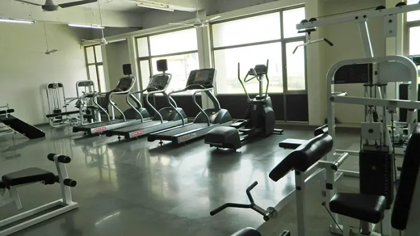
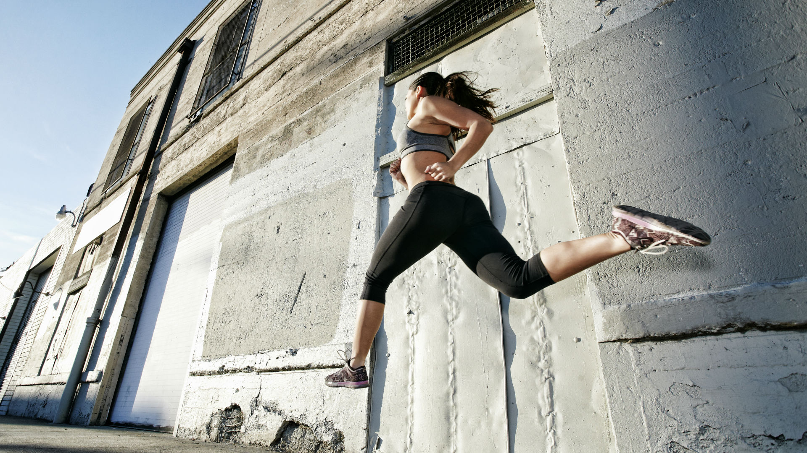

Welcome to our zuko sporting goods sports
A ideal place to find everything you need to take your passion for
sports to the next level.
Whether you are a professional athlete or someone who is just starting
out, here you will find the best quality in clothing, footwear and
accessories for each discipline. Our team is ready to advise you and
help you choose the best according to your needs.
Explore, try and enjoy sports with us!

Fitness equipment
Fitness centers usually occupy large spaces, but the space can also
be medium or small. It all depends on the amenities and activities
they offer. Some have indoor and outdoor sports facilities like
swimming pools, running tracks, rock climbing, sports playing fields,
racquetball courts, rooms for martial arts, yoga, Pilates, spinning,
weight training as classes or for individual use, and regular gym
equipment such as treadmills, elliptical and cycling machines.
They may also include saunas, hot tubs, steam rooms, tanning beds,
warm-up and cool rooms, showers, locker rooms, childcare services,
juice bars, snack bars, and retail sports stores.

Outdoor sports
Outdoor sports are physical activities that are practiced in an
open space and that have a connection with nature. It can
include a variety of activities, from hiking, rock climbing,
and camping to water sports such as kayaking and surfing.
Outdoor sports offer many benefits, including improved physical
fitness, the opportunity to relieve stress, and the chance to
connect with nature. .